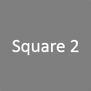
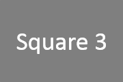

Welcome to TokayToken!
-
The simple way to create your own blockchain tokens!
Each Smart Chain in the Komodo ecosystem can act as a fully tokenizable platform. This provides many opportunities to the developer for creating on-chain assets that represent varying types of value for their users. For example, tokens can be used to represent real world assets, and users can then trade these tokens using Komodo's Token DEX and AtomicDEX features. The developer could also create tokens that provide incentives to their audience. Or, tokens can represent collectible assets. These are but a few examples of the usefulness of on-chain tokenization. At the time of the creation of these tokens, the creator can define their properties, grant meta data to them, and establish the nature of their scarcity.
 -
Fungible Tokens
All of the tokens created are fungible one with another, and maintain scarcity across the Smart Chain. This is the most common type of token, as each individual token is exactly the same as the others, much like Bitcoin, Komodo, Pirate or other cryptocurrencies. It is even possible with Antara technology to maintain token scarcity across multiple chains
 -
Non-Fungible Tokens
Alternatively, rather than creating a large collective of many fungible tokens, you could instead create non-fungible tokens. These work best if you have unique data for each particular token, for example collectables or storing other data in a token.
-
Storing Data in Tokens
We can attach meta data to the tokens at their creation. The maximum size of data that can fit in a single Komodo transaction is 10000 bytes. This is enough to include all sorts of data, and even simple images. The developer is naturally free to use their imagination in the design of this data. For example, you can describe their purpose and add a json data structure that informs other software of the properties of this token. Advanced developers can even add functionality to allow the tokens to gain new data over time as they are passed through transactions.